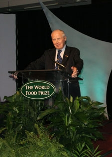

Dr. Norman Borlaug

Dr. Norman Borlaug speaking at the World Food Prize ceremony in 2003.
Dr. Norman Borlaug was an American agronomist who led initiatives worldwide that contributed to the extensive increases in agricultural production termed the Green Revolution.
He was awarded the Nobel Peace Prize in 1970 for his life-saving work helping to feed the world.